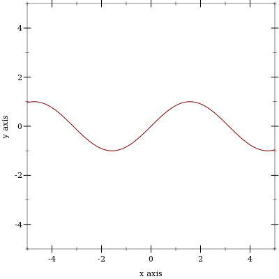
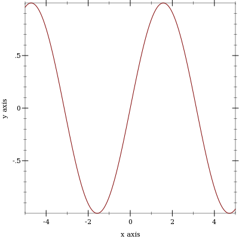
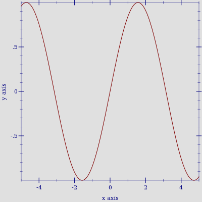

11 Porting From PLoT <= 5.1.3
If it seems porting will take too long, you can get your old code running more quickly using the Compatibility Module.
PLoT now allows plot elements to request plot area bounds, and finds bounds large enough to fit all plot elements. The old default plot area bounds of [-5,5] × [-5,5] cannot be made consistent with the improved behavior; the default bounds are now "no bounds". This causes code such as (plot (line sin)), which does not state bounds, to fail.
The #:width and #:style keyword arguments to vector-field have been replaced by #:line-width and #:scale to be consistent with other functions.
The plot function no longer takes a (-> (is-a?/c 2d-view%) void?) as an argument, but a (treeof renderer2d?). The argument change in plot3d is similar. This should not affect most code because PLoT encourages regarding these data types as black boxes.
The plot-extend module no longer exists.
The fit function and fit-result struct type have been removed.
Replace deprecated functions.
Ensure that plots have bounds.
Change vector-field, plot and plot3d keyword arguments.
Fix broken calls to points.
You should also set (plot-deprecation-warnings? #t) to be alerted to uses of deprecated features.
11.1 Replacing Deprecated Functions
Replace mix with list, and replace surface with surface3d. These functions are drop-in replacements, but surface3d has many more features (and a name more consistent with similar functions).
Replace line with function, parametric or polar, depending on the keyword arguments to line. These are not at all drop-in replacements, but finding the right arguments should be straightforward.
Replace contour with contours, and replace shade with contour-intervals. These are mostly drop-in replacements: they should always work, but may not place contours at the same values (unless the levels are given as a list of values). For example, the default #:levels argument is now 'auto, which chooses contour values in the same way that z axis tick locations are usually chosen in 3D plots. The number of contour levels is therefore some number between 4 and 10, depending on the plot.
11.2 Ensuring That Plots Have Bounds
The safest way to ensure that plot can determine bounds for the plot area is to add #:x-min -5 #:x-max 5 #:y-min -5 #:y-max 5 to every call to plot. Similarly, add #:x-min -5 #:x-max 5 #:y-min -5 #:y-max 5 #:z-min -5 #:z-max 5 to every call to plot3d.
Because PLoT is now smarter about choosing bounds, there are better ways. For example, suppose you have
> (plot (line sin)) plot: could not determine sensible plot bounds; got x ∈ [#f,#f], y ∈ [#f,#f]
You could either change it to
> (plot (function sin) #:x-min -5 #:x-max 5 #:y-min -5 #:y-max 5) 
or change it to
> (plot (function sin -5 5)) 
When function is given x bounds, it determines tight y bounds.
11.3 Changing Keyword Arguments
Replace every #:width in a call to vector-field with #:line-width.
Replace every #:style 'scaled with #:scale 'auto (or because it is the default in both the old and new, take it out).
Replace every #:style 'real with #:scale 1.0.
Replace every #:style 'normalized with #:scale 'normalized.
The plot and plot3d functions still accept #:bgcolor, #:fgcolor and #:lncolor, but these are deprecated. Parameterize on plot-background and plot-foreground instead.
> (parameterize ([plot-foreground '(0 0 128)] [plot-background '(224 224 224)]) (plot (function sin -5 5))) 
Change #:az in calls to plot3d to #:angle, and #:alt to #:altitude. Alternatively, parameterize multiple plots by setting the plot3d-angle and plot3d-altitude parameters.
11.4 Fixing Broken Calls to points
The points function used to be documented as accepting a (listof (vector/c real? real?)), but actually accepted a (listof (vectorof real?)) and silently ignored any extra vector elements.
If you have code that takes advantage of this, strip down the vectors first. For example, if vs is the list of vectors, send (map (λ (v) (vector-take v 2)) vs) to points.
11.5 Replacing Uses of plot-extend
Chances are, if you used plot-extend, you no longer need it. The canonical plot-extend example used to be a version of line that drew dashed lines. Every line-drawing function in PLoT now has a #:style or #:line-style keyword argument.
The rewritten PLoT will eventually have a similar extension mechanism.
11.6 Deprecated Functions
The following functions exist for backward compatibility, but may be removed in the future. Set (plot-deprecation-warnings? #t) to be alerted the first time each is used.
procedure
(line f [ #:samples samples #:width width #:color color #:mode mode #:mapping mapping #:t-min t-min #:t-max t-max]) → renderer2d? f : (real? . -> . (or/c real? (vector/c real? real?))) samples : (and/c exact-integer? (>=/c 2)) = 150 width : (>=/c 0) = 1 color : plot-color/c = 'red mode : (one-of/c 'standard 'parametric) = 'standard mapping : (one-of/c 'cartesian 'polar) = 'cartesian t-min : real? = -5 t-max : real? = 5
procedure
(contour f [ #:samples samples #:width width #:color color #:levels levels]) → renderer2d? f : (real? real? . -> . real?) samples : (and/c exact-integer? (>=/c 2)) = 50 width : (>=/c 0) = 1 color : plot-color/c = 'black
levels : (or/c (and/c exact-integer? (>=/c 2)) (listof real?)) = 10
procedure
(shade f [#:samples samples #:levels levels]) → renderer2d?
f : (real? real? . -> . real?) samples : (and/c exact-integer? (>=/c 2)) = 50
levels : (or/c (and/c exact-integer? (>=/c 2)) (listof real?)) = 10
procedure
(surface f [ #:samples samples #:width width #:color color]) → renderer3d? f : (real? real? . -> . real?) samples : (and/c exact-integer? (>=/c 2)) = 50 width : (>=/c 0) = 1 color : plot-color/c = 'black